Archives : 2010-02
北欧家居风 @ Feb 28, 2010
对室内装修有着燃之不尽的热情。在左八的“蘑菇网”看到这组北欧风情的室内设计，喜欢。家，一切关于幸福的起源，都在这儿。

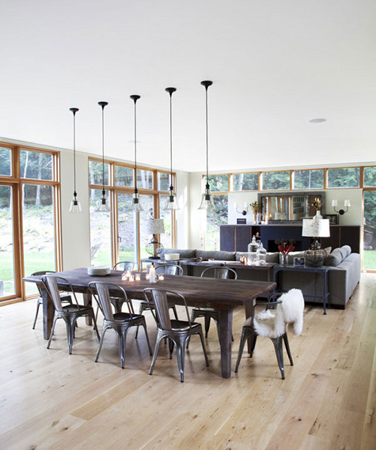
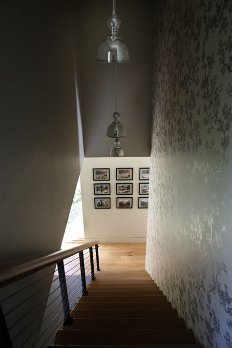
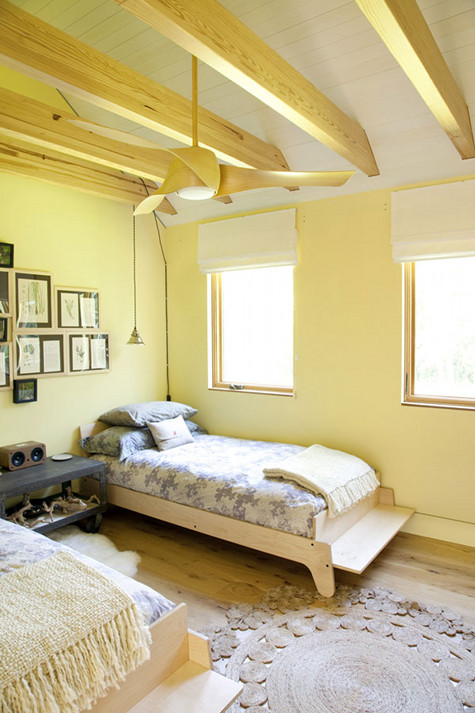
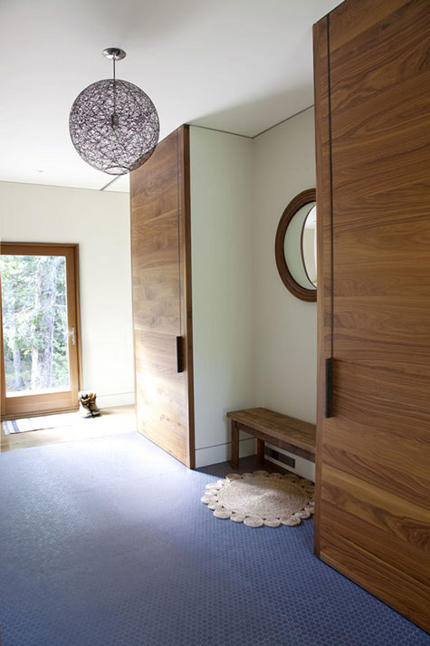
元宵家宴 @ Feb 28, 2010
从早晨到夜晚，鞭炮声越来越密集，虽影响环境但听到这声音还有过年的感觉，吵过这一晚，春节是彻底过完了。上午陆续接5、6个电话都在商量元宵节吃饭的问题，根本无法顺利睡懒觉。导致回家的路上我的眼皮好象挂着沉沉的沙袋，眼睛反射到大脑的画面俨然是高速摄像机拍摄的。。。为了全家人聚一起其乐融融吃小团圆饭，为家人的存在感尤其在过年过节的时候特别强烈。父母年岁已高，真正老小孩了，每每全家人相聚的时刻他们最开心。
不好意思，最近最关心的就是吃了。
偶爸爸妈妈每逢春节会卤猪手猪肚等肉食，偶从小吃到大，从没吃厌过他们的手艺。一是卫生；二是毫无腥气；三猪手上的毛清理的相对干净；四猪手美容；五补充雌性激素。
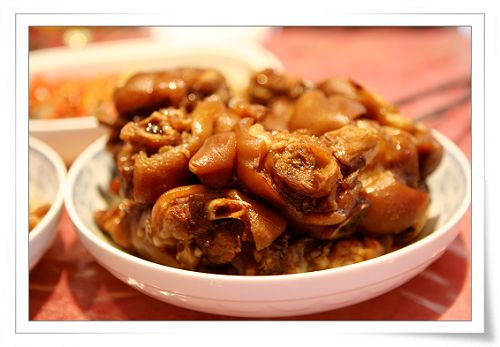
北京烤鸭令人惊讶地出现在家宴上，原来是买回北京烤鸭店的外卖，聪明。
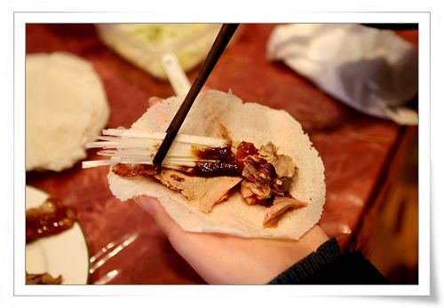
小乌贼一盒储藏在冰箱里，发愁如何烹饪它们？元宵家宴吃到偶妈妈炒的小乌贼，搭配新鲜青椒与干的红椒，过瘾，味道好，可借鉴。不要因为乌贼摸样丑就没了想法嘛~

南京特产芦蒿，这是土蒿，清炒也好象上了酱油似的，我还是喜欢人工芦蒿的口味。

来自加拿大和意大利的葡萄酒，红的口味传统，黄的有浓重的果味，偶喜欢传统红酒的味道。酒就是酒，手里拿着酒，喝下的却是果汁，那感觉怪怪的！
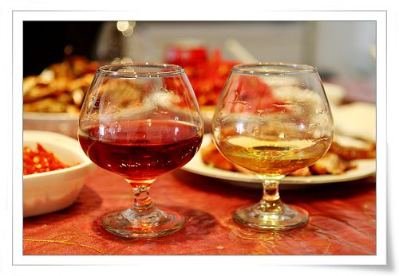
省略美食若干。。。。
据说今年元宵节夜晚的月亮最圆，适合赏月。时间为0：38分，如果我没记错的话。
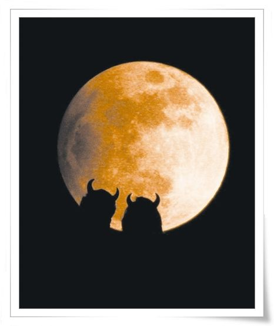
美妙下午茶 @ Feb 28, 2010
很有意思的科学实验：科学家分别给两只杯子装满清水，一只上面写着“我爱你”，另一只上面写着“我恨你”，然后放进冰柜中，第二天将杯子取出，用显微镜观察上冻的水纹。发现写着“我爱你”的水纹比写着“我恨你”水纹更好看。
有人问：“如果我嘴上说着爱你，心里却恨呢？”
“听到‘爱你’的人受益，心里‘恨’的只好自作自受啦。”
——下午茶——
美妙下午茶的美妙在于“自力更生，丰衣足食”，大家边热火朝天地聊天，边跟随师傅学看制作咖啡，交流烹饪美食和烘焙经验。我也越来越倾向在家里动手烧几个好吃的菜招待朋友们，那种快乐比直接杀到饭店和咖啡馆甩吃甩喝美妙啊，又为下一次相聚积淀饱满的期待。
小原子为大家煮Cappuccino，边研究爆涨的粉丝团，股票这么涨该多好啊；

咖啡煮好了；

加入黄糖；

打奶泡；

在COSTA加两滴榛子糖浆要花5元，还是自己备着舒坦，想加多少加多少；

小原子烘焙的培根面包，瞧这色泽，瞧这缠绵状。。。把我们这几个吃货诱惑得不行。
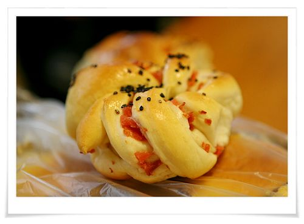
一枚太后受伤的小心灵，学名“红枣酸奶蛋糕”，这次吃出了酸。。。奶味儿。

——在一起——
面对小原子这样的女人，我真是汗颜呐，就会那么几样，我学我学我学学学；

老板今天很文艺；
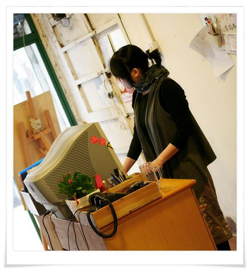
太后殿下也开始织围脖啦；
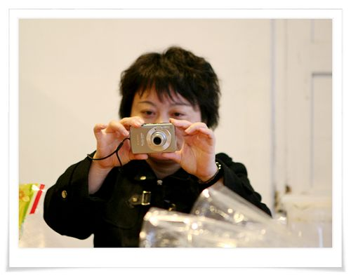
客串一把老板；

客串不忘织围脖，越织越暖和；
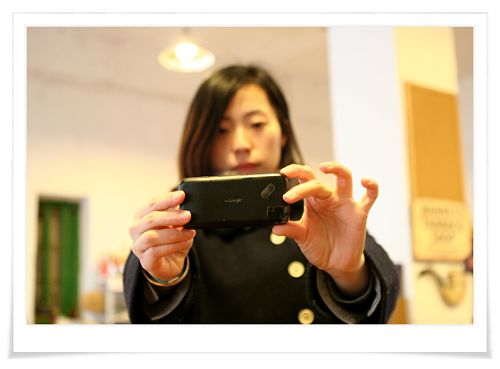
MM上网也不忘餐叉，最忠诚的吃货啊~
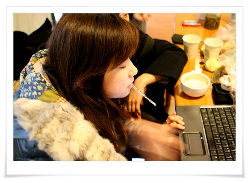
不知道该吃哪个好，胃口好一切都好；
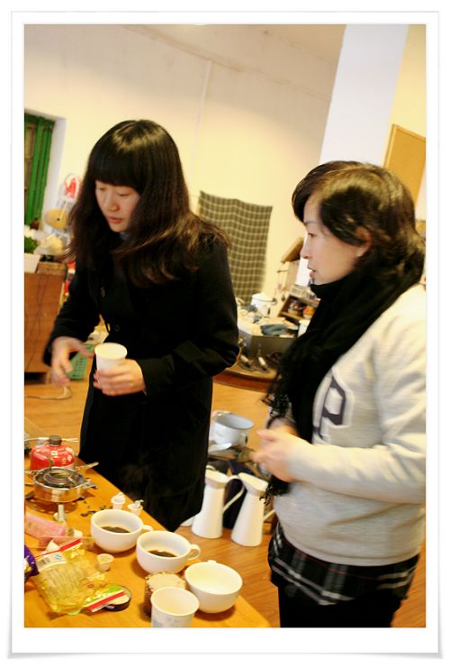
丢了魔法扫帚的女巫只好站着发呆了。

祝朋友们元宵节快乐，心情永远象彩色气球一样绚丽。
拍摄于IN CAFE。

小动乱 @ Feb 26, 2010
年前工作愈来愈忙，崩溃、新陈代谢不规律，体质明显下降，抵抗力渐弱。这两日扁桃体发炎，早晨醒来生生难受。对此我有点小欢喜，扁桃体终于管住我的嘴了。好事成双，星期二中午切冬瓜切到左手中指，切口小却深，洗头洗碗都免了，洗澡举着左手作发言状。
星期三，临睡前挠头皮，痒。。。
星期四，闻到自己头发上的老油味儿，喷香水盖住它^_^
昨晚观察下伤口，恩，今晚洗头。
生活里的小动乱，也有爱。

换筷子 @ Feb 26, 2010
“IN CAFE”进了各种款式的新筷子，早前逛MUJI，看到差不多的筷子要40-70多元一双，对木筷子有爱的我赶紧收藏了一大把回家。
新闻里说筷子每半年要更新一次，正好家里的旧筷子已超时完成使命。
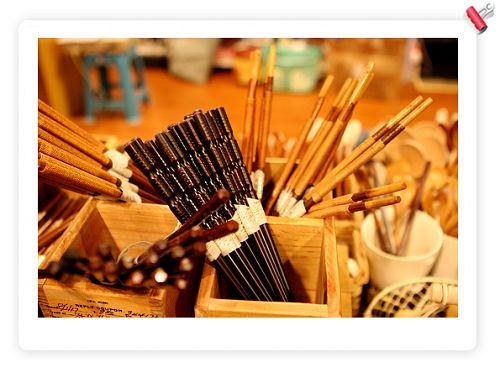
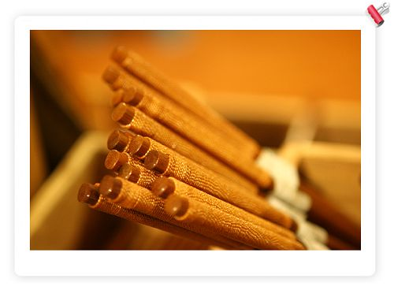
可收纳CD的铁皮盒，放书也不错。
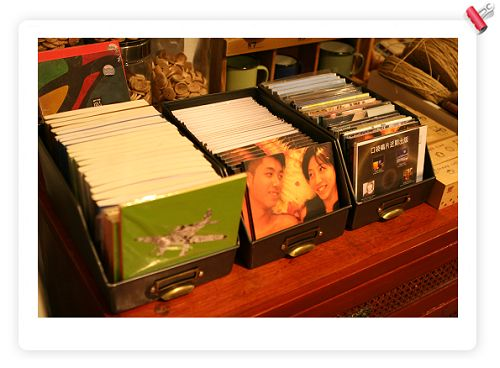
春暖花开时，让我们跳舞吧！ @ Feb 25, 2010
下午四点左右春天的气息忽然被阴霾天按了停止键，可是在既湿又闷的几个小时里我还是感受到春天到来的节奏，规律的循序渐进，如我喜爱的旋律让人喜悦。本命年的春天，生理的衰老比不上淡淡的成熟与沉淀让人珍视。小时候急匆匆地盼着长大，少年时脑子一团糨糊茫然不知所措，到了青年，滞后的心理发育始终让我处于纠结、任性、沉沦、叛逆与理想主义的自我折磨中....步入中年了，生理与心理终于和谐地踩在统一的节奏上，合着生活的旋律跳上一曲，有什么理由不去享受此时的满足？不要急，不要急，日子还长，幸福还有许多，只要有美好相伴。将这首“东京爱情故事”送给我度过的青春岁月，永别了。
redaction
By: Rossy Topalova
小原子*蛋糕 @ Feb 25, 2010
手机忘在办公室一夜....和扑土聊天，聊得我心旌荡漾，快12点才到家。吃到小原子烘焙的提拉米苏，以及没有酸奶味的酸奶蛋糕，桌上三个圆饼也被我一个人吃掉。扑土的手撕鱿鱼，沾上酱油芥末...美味之极。真希望能倒带到昨晚，重新再吃一遍~
即使私家烘焙的蛋糕也有赏心悦目的包装；

这些没有酸奶味儿的酸奶蛋糕安静地呆在盒子里等着我们去享用！为何叫酸奶蛋糕只等小原子解答。有些蛋糕吃起来会有点腥气儿，为什么呢？和鸡蛋有关，烘焙蛋糕要用洋鸡蛋喔；

同情一下还没吃到的那几位.......

在冰箱里冰了一宿的提拉米苏，口感甚好，加之小原子慷慨用料，外面可买不到这么货真价实的甜点。把左边的提拉米苏涂抹到右边的酸奶蛋糕上，混合着吃也好。
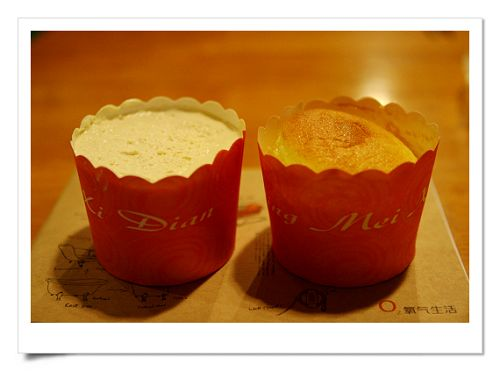
没有蛋糕全部是料的提拉米苏，据说一个8寸的提拉米苏用料的成本多达200多元，普通原料的成本也有160元左右。我吃完一个提拉米苏，等着扑土劝我吃第二个，但是...没等到...

蛋糕盒上的字母真正表达了我们这些吃货的心情，吃着小原子蛋糕，我们有什么理由不积极生活，乱发脾气以及对得不到的东西毫无涵养宣泄愤慨呢？与美好之物相伴，怎能不美好！

提拉米苏的记忆 @ Feb 23, 2010
记忆中的提拉米苏甜到人流汗，所以咖啡店里卖的小分量只能同一时间内享用一次，以免让人甜到厌倦。亦或者我之前吃到的提拉米苏还不正宗？就象每个店里的黑森林蛋糕会有区别一样？
可是我对巧克力味的蛋糕毫无免疫力，曾经喜欢某家的灌浆巧克力蛋糕，天长日久吃下来居然也变化了口感和质感，让人联想到换了厨师的餐馆。那么偶遇到好吃的食物，总能带来小惊喜和莫名的珍惜，比如这款问问送的Christine店的提拉米苏，早晨被我吃掉1/3，晚饭时虽然烧好饭菜，还是禁不住打开冰箱拿出剩下的2/3就着红茶吃起来，甜味点到为止的好，有我喜欢的巧克力蛋糕的影子，以及饱满略带弹性的口感......我的味觉由此进入新的记忆，以后看到它的摸样，这种记忆便会浮出来。任何甜美的事物只要恰倒好处的自然，就会让人欲罢不能的受到吸引。
推荐这首歌曲：“Alice”，当你正在享受提拉米苏的美味时。小原子很负责任地对我说：“有日语但韩语也多，一时懂一时晕，对你来说都是晕。。。”恩，小原子给我们普及一下初级日语吧，以免真的晕过去，哈哈哈哈~
提拉米苏2/3的摸样；

强忍到明早再吃剩下的几分之几；

爱上提拉米苏。

昨天开工，白天户外与户内的温度差别很大，白天着羊毛西服+短裙，到了晚上需要皮衣来保暖。总结下来公司的中央供暖系统似乎总在拉大户内与户外的温差，这时候外面23度，坐在办公桌前却双脚冰凉，办公室最冷的季节。

农业植物：唐蒿菜 @ Feb 23, 2010
昨晚下班去菜场采购蔬菜，其中有我颇为喜爱的“唐蒿菜”，喜欢用它做汤，配料可自己搭配。昨天的配料是干贝、虾仁和木耳，加水烧开，放入唐蒿菜烫几分钟即可食用，味道清新爽口。
一直惦记着与女伴们在汤山吃的农家菜里的老豆腐，这几天一想到它就滋滋冒口水。于是晚上先烧老豆腐，大家吃的差不多了，再下肥牛卷，问问好象承受不了这道菜辣到嗓子根的辣。我们几个却吃的很带劲儿。
有关昨晚那顿美餐，转一下问问的描述----
在茶家吃了晚饭。清蒸海鱼，韭菜黄炒蛋，辣豆腐肥牛，我还处女吃到了干贝唐蒿木耳汤，对于丧失一半味觉的感冒人来说，既有重头辣味，又有清新小汤，我的味蕾在复苏。与LUKE、土豆的桌下情也进一步发展。坐车去山顶看夜景，没有路灯，其实星空更美，夏天可以带望远镜来，我就这样萌发了对银河的憧憬。
（偶补充：干子炒青椒，德国黑啤、失败的烤鸭，无人问津的鸡爪子。以及登山之后又去观“九龙湖”的水。）
最近菜场里唐蒿菜卖得正欢，倾向在开水里烫烫的做法，既无油烟又保证了营养。
吃多了唐蒿菜，不知道它还开花吧？呵呵~
注意：唐蒿不是茼蒿，也不是芦蒿哦！

吃吃喝喝的满足 @ Feb 19, 2010
今年春节过得如此安逸。
初一初二大雪，家很温暖。隔三差五，亲朋相互走动聚聚，吃吃喝喝，幸福的本质应该就是这样简单，日子过得满足充实，网络在生活中也就不那么重要了，假期快结束这才补上旧闻。
年初二，小原子、问问和shuwua来偶家中相聚，电影和音乐只是背景，女人聊起来毫无时间感，天色渐黑，本人奉上小酒准备了几个菜，外面又飘起小情调的雪花，真好！
玩得开心，忘记拿相机了。只好用手机照补上记录。
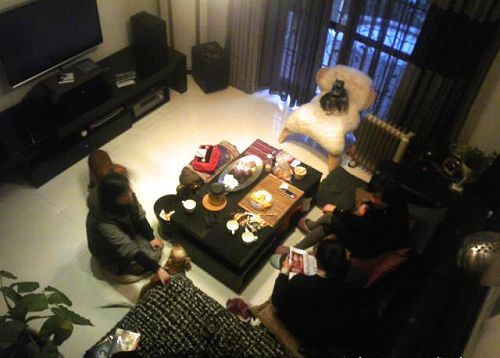
小原子亲自烘焙的巧克力饼干和蛋糕，以及她送给我手工缝制的香包，上面绣着Luke和土豆，有爱又耐心。
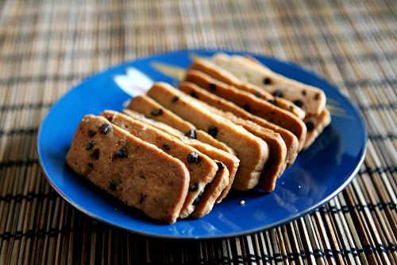

初五和女伴们跑去汤山看房子吃农家菜，遗憾没去泡“汤”，实在可惜。这是俺第一次在汤山停留，话说这农家菜真是可口，排队等桌，过年价钱也涨了。现在看着这些菜真想再吃、吃、吃一顿啊~

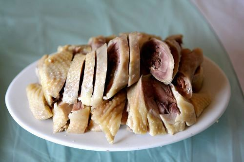

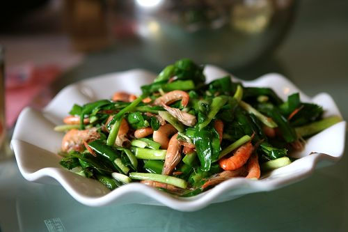


这张用了问问拍的，5个人正好凑齐一个乐队咯。

阳光虽好，风即大又寒，一个帐篷塞不下5个人和4条狗。偶家运动健将在大草地上玩捡球运动，土豆和痴情男豆豆则整个下午上演女跑男追的情景剧。最有意思的是撑起来的帐篷居然收不回去。于是俺们就举着粗略折叠后的“小”帐篷上车了。

美丽“冻”人的小原子，在寒风+暖阳下摇身变成“女飞行员”唠。
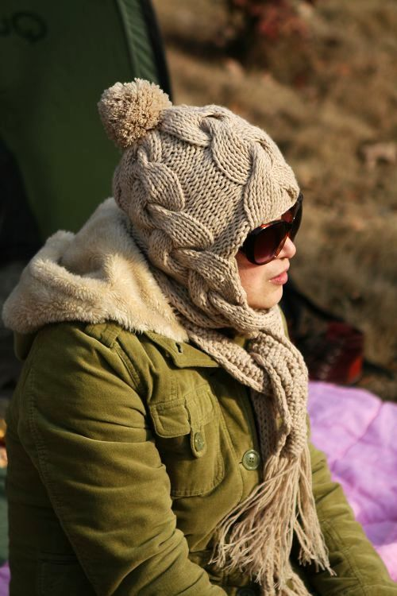
怪大叔外外只爱一个人，只接受它爱的人爱它（有点绕啊）。其他人只能用眼神传递爱唠！
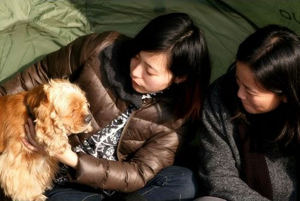
豆豆狗生中难忘的一天：追靓女“土豆”。

俺家两宠，一个粘人一个不出堂。后者毫无社交经验，不是冒失就是鸡动，淡定淡定~

5个人2部车，一整天的快乐。话说小原子一路狂飚，跟车的偶佩服她无所畏惧的精神（去汤山的高速上可是有探头的啊~）！一下车大家直奔山头扎帐篷，Luke路遇腊肠犬夫妇，好奇地奋力向前，拽着36斤的它可不是件轻松活儿。

女飞行员豆娘毫不留情地阻止豆豆刚刚萌生的爱情！

春节快乐！ @ Feb 15, 2010
2.14.这天下午下雪，本来一次普通的遛弯因为天气演变成一场快乐的体验。
LUKE一出来好兴奋的样子。

LUKE在厚厚的积雪上跳跃地行走。

这种表情叫快乐~
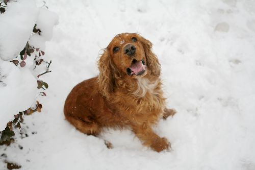
土豆和LUKE抢雪球，把我推倒了。

两年不到Luke的体重长了7斤。
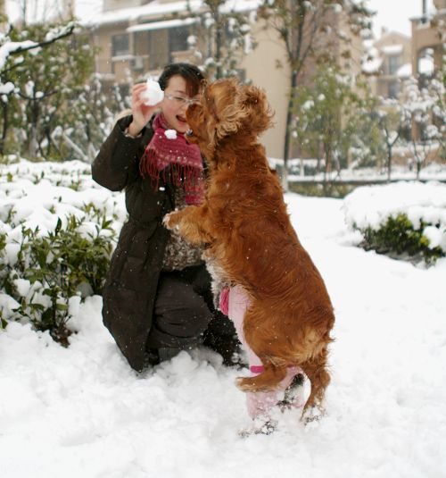
靴子上的雪后来回到屋里就化了，靴子经历过雪水更干净，省了清洗。
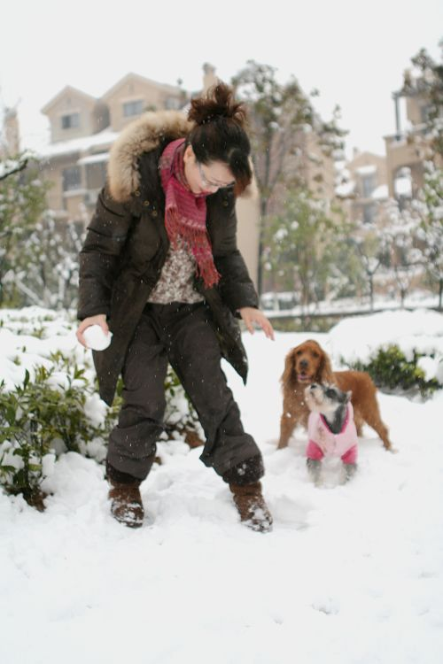
造型比较龌龊的雪人。

刚盛开就被冰雪定格了。
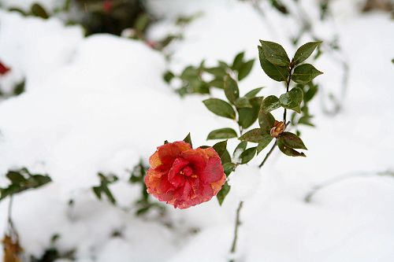
年初一天上还飘着密集的小雪花。

它们追的是我手中的雪球。
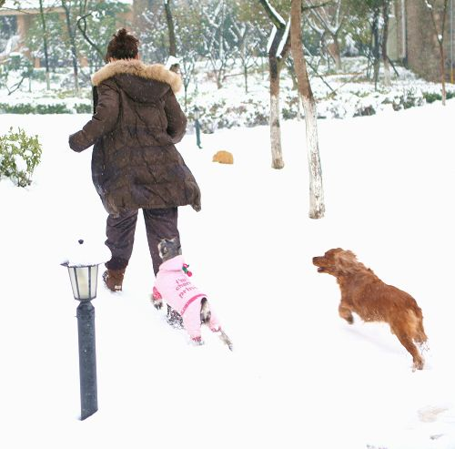
拉着土豆转个圈。
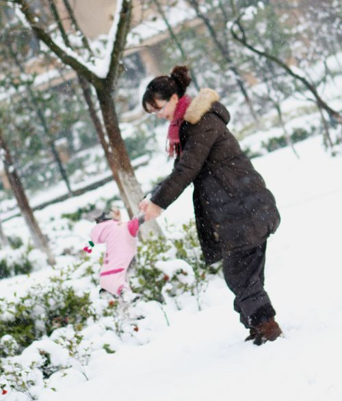
LUKE一定奇怪，为何雪球一扔出来就没了？所以它会在雪地里使劲的扒啊扒的找。

憨啊~


送两只小爪印给天下有情人！
Found Dead @ Feb 12, 2010
英伦坏小子Alexander McQueen死在伦敦公寓里，他给我们留下疯狂的想象力。他在母亲过世后几天结束自己的生命， 作为最年轻的“英国时尚奖”得主，他曾在获颁不列颠帝国司令勋章 (CBE)时声称，自己受勋的唯一理由，是为了让母亲一尝夙愿，亲眼看看白金汉宫是什么样。
Alexander McQueen语录：聪明智慧坚强勇敢的女人是我的设计对象，我不在乎她们的高矮胖瘦，我不单希望她们能穿我的服装，更希望她们因此坚强起来。我从来不想和Lagerfeld居住在同一个世界，我也不打算开始做一个对流行谄媚的势利鬼/性感是一堆垃圾！我设计这种低腰裤，根本就是为了拉长女人身体的比例。（来自《新周刊》）
我觉得他的设计既让女人优雅，又令女人强势，LADY GAGA应该是他忠实的用户。


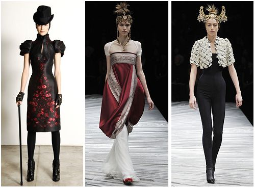

Alexander McQueen和他的母亲

GF1 & E-P2 @ Feb 12, 2010
作为随身携带的相机，除了卡片机之外还有GF1和E-P2可以选择。看了下两款机器的综合评测，E-P2反应较好，难怪扑土想搞一台呢~早两年我曾考虑过LEICA M系列，想感受一下传闻中的LEICA特有的画面效果，现在市场上有了GF1和E-P2，弱弱的问一句：LEICA还有哪些优势？


Dress Blog @ Feb 11, 2010
这两天工作稍显缓和，我拍，我拍，我拍拍拍~

佩戴了蝴蝶结式样的小胸针，上面镶嵌着碎钻，小小的，很别致。
我喜欢把小的胸针别在衣领或肩膀上。
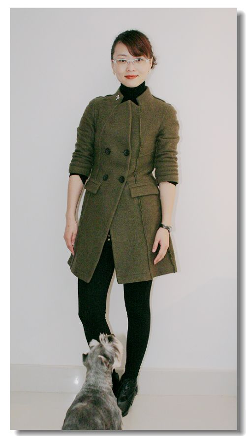
新玩具CANON 580EX II，但愿我不要沦落为器材党啊~
又下雪了 @ Feb 11, 2010
早晨醒来，外面有车胎碾过zzzzzzz的声音，拉开窗帘一看，果真有积雪啊！邻居家的车把手冻住了，我的雨刮器冻住了...上班的路上，几乎每辆车的时速在20公里左右，偶见一两个二五份子，车速和平时差不多，但轮胎明显打滑。
有个二五开着一辆老款凯迪拉克，挺快的速度开过来，上冻的冰雪使其从正方向行驶变成侧冲，我正好在其侧冲过来的位置...要过年了，谁也不想这时候把车送进去修。好在那个二五拼命打方向，车头又回正了。我觉得这种天气脚下给油如此快的二五，平时做事情肯定也不靠谱。我们一般对这种横冲直撞不靠谱的开车人直接送上一句：“赶着烧头炉啊~”
今天汽车和飞机会晚点，真为那些赶路的人担心。想着珠三角10万农民工骑摩托车返乡过年，挺不是滋味儿的~省钱是其次，体面回家为先，这种选择实属无奈。

Dress Blog @ Feb 10, 2010

阴雨连绵 @ Feb 09, 2010
连续几日阴雨，衣服干不了，只好再烘干晾晒，然而空气中湿度大，晾晒一会儿...就一会儿摸上去还是有点湿。早晨8点未到被一阵响雷闪电惊醒，春天啊春天，来得如此隆重又热烈！天气预报说节前江南会迎来第二场雪，反正也积不起来，不如不下的好，以便给回家的人路上方便。
春节还有4天，工作稍稍悠闲，心情跟着渐渐轻松愉悦。节前最后一个周末做了许多事儿，还在扑土店呆了一个下午，看着她不停地包装商品，不停地包啊包啊，自己做老板并不比打工轻松，坐在家里不开张也要花钱的。我坐在那张儿童床上看着她包快件，喝着她买的日本清酒，那个下午过得无比放松。
周末购入CANON 580EX II闪光灯一只，闪光灯对于光线的平衡，就象豆浆平衡雌性激素一样的效果，哈哈哈哈~
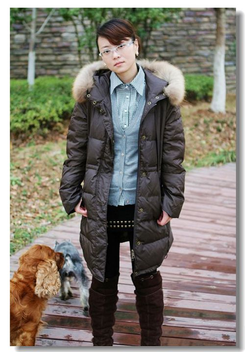
我的鞋不是被穿脏的，而是我家小宠们兴奋外出时，经常在上面踩几脚，冬天尚可，夏天被踩的分量不轻哦~

也，爱上，这么嗲的饰品：D
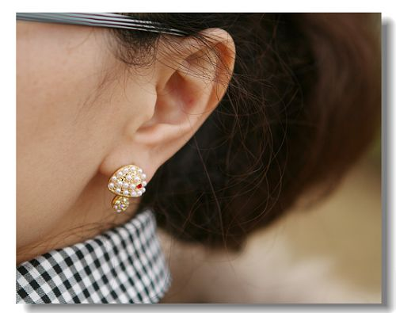
Dress Blog @ Feb 08, 2010
这双靴子实在太。。。平跟了。稍微有点小跟也好，不过走路很舒服，遗憾的是皮质太软，象我这样大步流星走路快的人，难免碰擦，鞋头已经伤痕累累。当时在德基买到它还是从外地调货的，最近在水游城的NIEWEST看到居然还有货，真是。。。


*奶茶*美好 @ Feb 08, 2010
自从小原子无私教授奶茶秘籍之后，我紧锣密鼓地买回制作奶茶的原料和工具，不断尝试，一次比一次进步，最终做出可口的港式丝袜奶茶。以至于周末的早晨以及工作日的晚上，都会做奶茶来喝。还期望家里来客人，好当场做奶茶来招待他们。
做港式奶茶的锡兰拼配红茶、进口罐装淡奶以及拉袋一只，拉袋上的塑料拉链有一小截在反复练习中被火烧化，但不影响使用。如果没有拉袋，真的可以用现成的丝袜来煮茶哦~先前没有买到淡奶时，我就用光明牛奶来配茶，口感真的没有淡奶的丝滑感，不信可以自己尝试一下。
据说“锡兰拼配红茶”口感梢有些涩口，顶级锡兰红茶口感更好，等我尝过再作评判。现在拼配茶的口感我已很满足，至少能作出象模象样的港式奶茶喽。
从扑土店拎回红色搪瓷壶一只，在水游城4楼看到和扑土店差不多的搪瓷壶，要300元一只，颜色款式还没扑土店里的好看，里面更不是白色而是蓝色，贵在品牌附加值？
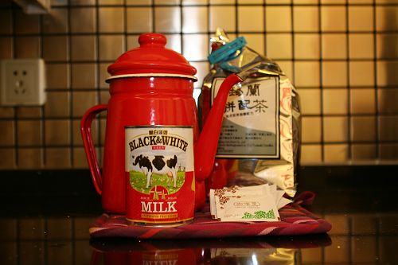
今天收到TB购买的袋装白糖。。。一大包，被分别装入各种密封罐里，小部分散落在竹篮子里备用，袋装糖用起来既体面又卫生。
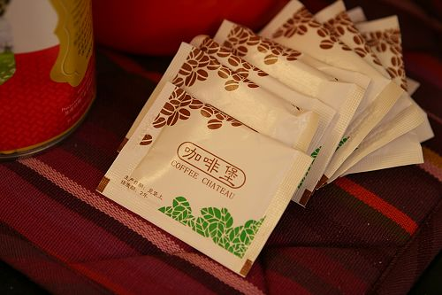
以及韩国进口釉子茶一瓶，够春节期间食用的量，味道还不错。要把春节过得美美的，所以买了短绒沙发垫和椅垫，希望提高家中色彩的和谐度，有时间再搬回几盆植物，对了，IKEA目前有几款一色的花盆有相配的底盆，看中白色的那款，放在家中一定很好看。

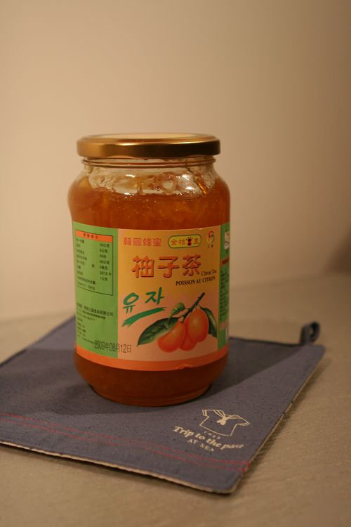
以下为收集的各种奶茶制作方法，慢慢学习：
印度奶茶（Masala Chai）配方
原料：鲜牛奶300毫升、红茶12克、焦糖适量、豆蔻一粒、肉桂一小片、丁香二粒、鲜奶油一匙。
做法：焦糖放进奶锅，加少量的水煮至糖汁呈金黄色并冒出焦香味，到入鲜牛奶，不断搅拌，加红茶入锅煮沸后，加入香料，改用小火煮1分钟，然后放入奶油搅拌几下，再以小火煮约2分钟，过滤装杯。也可依照各人口味，添加少量的胡椒或巧克力酱。
杏仁奶茶做法
原料：杏仁100克、牛奶200毫升、白糖适量。
制作方法：
（1）把杏仁洗净在热水中浸泡10分钟后，去皮。
（2）用小石磨带水磨成杏仁汁（用多功能食品加工机则更好）然后用干净的纱布过滤，使杏仁汁流入碗中。
（3）把杏仁汁倒入锅中，加白糖、适量清水，用文火煮沸。
（4）把牛奶倒入煮沸的杏仁汁中，搅拌均匀，再次煮沸，晾凉后即可
麦香奶茶
材料 : 西米1/2杯，统一麦香奶茶。
做法:
1. 西米浸透，放入滚水中者至透明，隔去水分，待用。
2. 将麦香奶茶冰冻待用。
3. 将冻茶放入杯中，加入煮熟的西米，饮用时拌匀即成。
坚果奶茶
做法：
1、将茶叶、清水、一茶匙的坚果切片放进锅中去煮，再加入占20%的牛奶。
2、粗砂糖与坚果奶茶非常适合，可以当作甜味调料加进锅中。加入奶油之后，在撒上坚果切片。
3、坚果之外，近来也有以花生或核桃来代用。
香蕉奶茶
做法：将香蕉切片，宽约4mm，并把统一巧克力奶茶及一人份二、三片的香蕉切片放进锅中冲泡。
注意：
沸腾过度容易使味道尽失。可依喜好略加些砂糖，然后淋上奶油、放入装饰用的香蕉。为了不使装饰用的香蕉马上沉入红茶中，其诀窍就是将香蕉切成薄片使之浮起来。
暖姜奶茶
做法：
1、将茶叶与磨碎的生姜放入锅中，以清水浸泡。茶叶泡开了之后，加入与清水同量的牛奶并加温。
2、倒入茶壶之后，注入预先温热的茶杯中，并切宽约1~2mm的生姜片装饰茶杯，便完成了。
玫瑰奶茶
玫瑰果是野玫瑰的果实。它的维他命C的含量是柳橙的20倍，柠檬的60倍。这道玫瑰果奶茶具有提高肝脏功能的效果。适口的酸味加上蜂蜜的甜味，非常好喝。
做法：
用玫瑰果茶包泡茶；在锅中放入200CC牛奶温热，将茶倒入再加热。在奶茶快沸腾前熄火，可按个人喜好酌量加入蜂蜜。
珍珠奶茶制作方法：
1、雪克杯中倒入一咖啡勺调匀奶茶粉、1勺半果糖、加入三分之一杯热开水，用搅拌棒或咖啡勺调匀，再加满冰块，急速摇动雪克杯20次后，倒入放有珍珠20g的杯中即可。
2、雪克杯中倒入一咖啡勺奶精，一勺半果糖、加40g热水调匀后，加入二分之一杯红茶水（锡兰红茶、麦香红茶、咖啡红茶均可）再加满冰块，急速晃动雪克杯20次后，倒入盛有珍珠20g的杯中即可。
注：制作果味珍珠奶茶方法同上，只需再杯中加添果粉2勺。（根据所添加果粉不同可分别制作成木瓜珍珠奶茶、香芋珍珠奶茶等。）
Dress Blog @ Feb 05, 2010
不知道从什么时候开始喜欢上金色饰品，审美的转变也是经历了若干年只选择银色和秀气的设计。金色搭配恰当，能立刻为平常衣装增添大气，前提是品质一定要好。我无法让自己穿成shopping girl或参加某个show的摸样去工作场合，但稍作打扮也是对繁忙工作的一种平衡。对，你的环境也决定了你的穿衣倾向。昨天看到一个穿着迷彩裤的女孩子从电梯前一闪而过，即使美，未免与场合不搭。
山树觉得咖啡色和咸菜色会让人增龄不少，可能真和年龄有关，到了一定年龄原先不能接受的色彩现在却能渐渐让人喜爱。那么，不用急，让我们慢慢享受7色世界，就象享受每个年龄段带来的不同感受。审美，也需要时间来慢慢培养。
亦舒：女人穿得好，不外是天职，男人注意服装，则带来意外的惊喜。
（过于注重打扮的男人，一丝不苟，油头粉面，这个T那个衫讲起来头头是道，这样的男人应该直接变性为女人。）


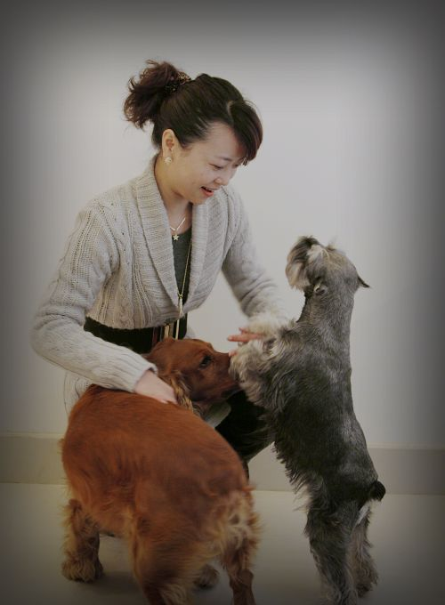
玫瑰，建议如下。 @ Feb 04, 2010
1、请先通过E-MAIL、FAX与Hans（男主人）预定房间，要么直接打个电话过去也行，Hans有个办公室，每天在那里工作；
2、ZURICH火车总站有个售卖国内火车票的柜台，购买“联票”（包含火车+汽车），注意票上显示的“到达时间及下班车启程时间”以及站台，中转时间不过几分钟，但肯定够你中转。ZURICH到达旅馆不会超过3小时，事先与Hans联系好，让他在车站接你，并且给你些建议，通过邮件交流会更具体。
或者在北京直接购买瑞士国内火车联票，前提是你准备在瑞士海游的话，如果仅仅小范围逛逛，可以不选择这种联票。当然手持联票可以乘船乘汽车，省去动脑筋研究自动售票机操作问题，偏远地方几乎没有英文操作指示（或许整个瑞士英文指示就不多）。除非你会德语，不然需要求助年轻的路人甲乙。
3、从旅馆到瑞士最远的城市，最多三小时左右，一般在1-2小时单程时间。建议早晨出去玩，晚上回旅馆。THUN湖还是不错的，可以延湖下到各个小镇上逛逛，一天时间比较紧，必须早点出发。
建议晚归时随身带个小手电筒，山上没有路灯，但路况绝对好。在瑞士走走挺惬意，所以务必穿双舒适的鞋适合长时间行走很重要。有些细节我回家找找资料，尽量多提供一些给你。代我向RUTH和HANS夫妇问好哦~
Website：www.berghaus-eggiwil.ch
Tel:++41/+34/491 2368
Fax:++41/+34/491 2375
E-MAIL:berghaus@eggiwil.cn
Berghaus Eggiwil （1）
Berghaus Eggiwil （2）
Berghaus Eggiwil （3）
Berghaus Eggiwil （4）
节前收拾-1 @ Feb 02, 2010
三个黑色一个红色收纳盒，买回家很久都没有安装起来使用，晚上花了一个多小时收拾书架，把琐碎的物件都放进收纳盒，避免凌乱。得意于当时对于尺寸的把握，每个收纳盒放在书架最底层真正好，如果四只收纳盒都是黑色会更整洁。
下一步收拾客厅，用不上的东西坚决扔、扔、扔！
否则会象老年人的家一样，杂物越来越多。
不仅因为这件中长外套的设计，还喜欢它的咸菜色。下面配靴子，外面加件羽绒服或大衣，到办公室穿着它温度正好。天气好些，完全可以穿出七分袖的效果。


观看《Avatar》 @ Feb 01, 2010
提前两天去万达影院买《Avatar》3D双机的电影票，上映半个月，买票还是要排队。三条黑压压的队伍周围也是人，人多嘈杂的场合的确有些不适，那些与他人身体没有礼貌距离的讨厌鬼。。。还是有滴。已经排队了，不知道急个什么劲儿？
看3D电影的理想位置在8、9、10排的中间，双机只有晚上7：30和10：40两个时间段，只好买了10：40分的，以为会看到凌晨1点半，结果提前一刻钟结束。
没有传闻中的眩晕感，即使我架着两副眼镜，电影真好看！但3D效果不明显，象看立体画。故事情节没什么新意，可是那么赋有想象力的各种形象和电脑技术趋于完美的表现，着实震撼了我。原始社会真好，活得自在，人性淳朴，世界都是被欲望强大的人给糟蹋了。正义最终战胜邪恶，不过是理想主义。这部片咱中国的房地产开放商、ZF拆迁办官员看了会是什么感受？这问题其实也没必要想，所谓在其位谋其职，接受不了也不会干这个了。
导演“詹姆斯.卡梅隆”都是大手笔制作，之前的《泰坦尼克号》，《终结者》。。。演员都不是大牌，电脑特技制作投入都很大。不过昨天听到新闻里讲他并没有获得美国导演协会提名的最佳导演奖，一般获得该奖的人，接下来会毫无悬念获得奥斯卡导演奖。
友人跑去无锡看的IMAX，据说上海的IMAX黑市卖到450一张票。南京的3D双机票价是120元，周二周三晚上也没有折扣。希望南京不久的将来能出现真正的动感影院看3D电影，有风的时候观众脸上能感觉到风，电影里下雨时观众能感受到雨飘在脸上，座位能跟着电影剧情摇晃震动，这才是真正感受3D电影的奇妙。当然前提是，得有象《Avatar》这样的作品让你看！
转一下工科男Wanze先生看完后的困惑，如下--
1、影片最后女主角的情感转变告诉我们找女人，男人的坐骑很重要啊。她的心理是这样的：你能骑魅影，你就能骑我；翻译成地球话，就是：你能开宝马，你就能开我。
2、有个发现，纳威人不养狗。森林里六条腿的野狗不少，但显然还没有完成驯化进程。为什么森林里的动物都是六条腿，纳威人却是四肢而不是六肢？看来他们不是由那些低等动物进化来的，达尔文理论在潘多拉失效鸟。或者，纳威人其实也是外星移民？
3、看到了男主角肉身的身残志坚，看到了男主角那条乌黑的麻花辫，看到了星星点灯的潘多拉夜景，我不由想起了他——郑智化！